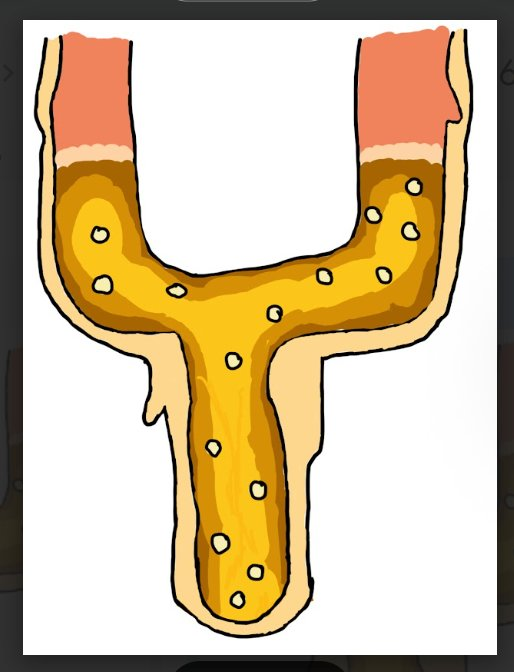
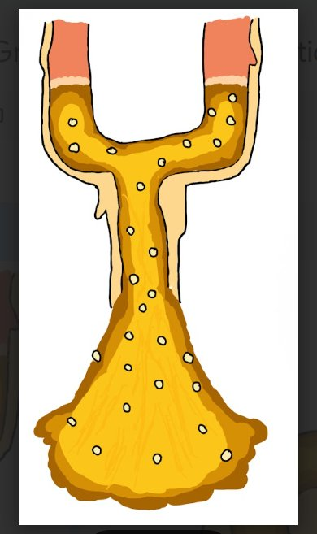

↓ CON SWITCH INPUT
S1 — LEFT
CARNIVORE
Animal-derived only. Proteins & fats enter this branch.

S1 — RIGHT
HERBIVORE DIET ONLY
Plant foods only. Routed through full digestive path.
S7 — DETACHABLE
GIZZARD
Mechanical grinding. Herbivore path only. Breaks fibrous plant matter before enzymatic digestion.

S3 — 0/3 QUEUED
WEIGHTED GATE
Accumulates 3 qualifying samples before releasing batch downstream.
PHOSPHORUS PILLAR
click to remove


← BATCH THRESHOLD
⚠ STRUCTURAL COLLAPSE — STATION OFFLINE
Reset lab to restore
Reset lab to restore
S4 — ACID SPLITTER
HIGH ACID TILT
Gastric pH chamber. Lipids diverge left → S2 Vitamin. Protein/Carb right → S5 Small Intestine.

STOMACH IDLE — 0 HELD
← LIPID
→ S2 Vitamin
→ S2 Vitamin
⇅
PROTEIN/CARB →
→ S5 SmInt
→ S5 SmInt
S2 — VITAMIN
VITAMIN STORE
Fat-soluble vitamins stored. Excess expelled to waste.

STORAGE
LIPID RESERVE
WASTE
LIPID EXCESS
S5
SMALL INTESTINE
← ENZYMES CANNOT PASS
Absorption gate. Lipids → Lymph. Protein/Carb → Capillary. Residue → S6.

LIPID → LYMPH ↗
PROT/CARB → CAP ↘
RESIDUE → S6 ↓
LYMPH
Lacteals absorb chylomicrons
CAPILLARY
PIPE
PIPE
Portal vein uptake
S6
LARGE INTESTINE
← BACTERIAL FILTERS
Fermentation & water reabsorption. Bacterial flora processes remaining fiber.


FLORA STATUS: ALIVE
WASTE
EXCRETION